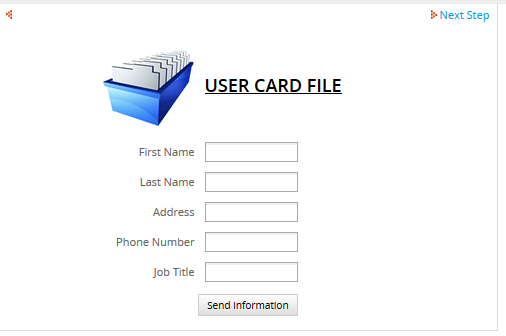
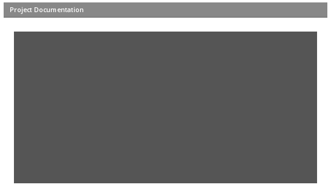

Release Notes | Downloadable version
Extended DynaForm Fields
The PowerUp plugin offers 3 additional fields to be used in DynaForms, so that forms can display images, view documents and display the list of files in an Input Document. All of these fields allow users to view, but not change the content.
To use one of these additional fields, open a process for editing, go to the DYNAFORMS tab and open a DynaForm for editing. Look for the 3 fields in the upper-right corner of the DynaForm toolbar:

Image Field
The image field allows users to view images inside Dynaforms, such as a company logo or a user's profile picture.
Note: All images are shown on their original size. ProcessMaker does NOT resize them.
To add an image field, click on its icon and then define its properties.
Properties:
- Field Name *Required
- Link
- Absolute URL
XML Definition:
Using an absolute URL:
Using a relative URL:
Link
Enter the URL to the image, which is the internet address to access an image file. If Absolute URL is marked, then enter a complete URL include the protocol, such as:
Otherwise, use a relative URL, which will be appended to the IP address of the server where ProcessMaker is installed.
For example, if ProcessMaker is running at http://myserver.com/, then use the relative URL images/processmaker.logo.jpg to access the file found at:
Additional image files can be placed on the ProcessMaker server in the images directory located at: <PM-INSTALL-DIRECTORY>/workflow/public_html/images/ But it is recommended to use the Process Files Manager to upload files to the public directory. Files in the public directory, can be accessed at the relative URL:
For example, the file companyLogo.jpg uploaded to the public directory in a process whose unique ID is "1494736555425cd21829805073986728" can be accessed at:
To find the unique ID of the current process, go to the XML tab in the DynaForm designer and look for the following line at the top:
enabletemplate="0" mode="" nextstepsave="prompt">
The unique ID of the process is the first ID found in the name property of the DynaForm definition.
The problem with using files in the public directory is that these files are publicly accessible. If needed to show restricted images which should only be accessible to certain users, then use an Input Document file:
- Latest version:
sys<WORKSPACE>/en/neoclassic/cases/cases_ShowDocument?a=<CASE-DOCUMENT-UID>- Example:
sysworkflow/en/neoclassic/cases/cases_ShowDocument?a=106235827542580dfcfa708029871391
- Example:
- Specified version:
sys<WORKSPACE>/en/neoclassic/cases/cases_ShowDocument?a=<CASE-DOCUMENT-UID>&v=<VERSION-NUMBER>- Example:
sysworkflow/en/neoclassic/cases/cases_ShowDocument?a=106235827542580dfcfa708029871391&v=2
- Example:
Or use an Output Document file:
- Lastest Version:
sys<WORKSPACE>/en/neoclassic/cases/cases_ShowOutputDocument?a=<CASE-DOCUMENT-UID>&ext=<EXTENSION>- Example:
sysworkflow/en/neoclassic/cases/cases_ShowOutputDocument?a=257039549542580f9e28723099832078&ext=jpg
- Example:
- Specified Version:
sys<WORKSPACE>/en/neoclassic/cases/cases_ShowOutputDocument?a=<CASE-DOCUMENT-UID>&ext=<EXTENSION>&v=<VERSION-NUMBER>- Example:
sysworkflow/en/neoclassic/cases/cases_ShowOutputDocument?a=257039549542580f9e28723099832078&ext=jpg&v=2
- Example:
Absolute URL
Mark this checkbox if the address in the Link field is a complete URL, rather than a relative URL.
Example 1: Image with an absolute URL
In a form to enter "User's Information", add a card file logo, which has an external URL:

Modify the DynaForm's HTML to move the image to the left side:

Example 2: Image with a relative URL
In a form to enter "User's Information", add the ProcessMaker logo, which has a relative URL:

Modify the DynaForm's HTML to move the image to the left side:

Adding a text label
To add a text label to an image, edit the XML code for the image field to add a text label inside language tags.
For example, to add the label "Company Logo", change this XML definition:
<en/>
</logo>
To:
<logo type="image" file="images/processmaker.logo.jpg" required="0" readonly="0" optgroup="0">
<en>Company Logo</en>
</logo>
The label will be right justified, next to the image:
Document Viewer
This field displays a single document or image in a DynaForm, which was previously uploaded to an Input Document in the same case. This field will display the last file uploaded to the Input Document, if it has an extension of jpg, gif, bmp, png, txt or pdf.
To add a Document Viewer field, click on its icon in the toolbar and define its properties.
Properties
- Field Name: *Required Enter a name without spaces to uniquely identify the field.
- Input: Select an Input Document whose last file will be displayed in the DynaForm.
- Width: Enter the width of the document viewer, which is the number of horizontal pixels.
- Height: Enter the height of the document viewer, which is the number of vertical pixels.
- Border: Mark this checkbox to add a 1 pixel solid gray border around the document viewer.
XML Definition
Note: A Document Viewer field may only display the last file which was uploaded to the Input Document. If needing to access more than one file from an Input Document, then use a Input Document View field.
PDF files
The Document Viewer displays PDF files in an interface with controls to navigate the document.

By default PDF documents are zoomed to the width of the page. Use the zoom controls to select a level of magnification. Use the previous page and next page buttons or enter the page number  to go to a different page in the document.
to go to a different page in the document.
Click view thumbnail images of each page or see an outline of the document on the right side of the Document Viewer, click on the  button and select the type of view. For more options, click on the
button and select the type of view. For more options, click on the  button to display the following menu on the left side of the Document Viewer.
button to display the following menu on the left side of the Document Viewer.

Plain text files
The Document Viewer displays plain text files (with a .txt extension) in a box (HTML DIV) with a scroll bar on the left side. Lines which are wider than the box are automatically wrapped. Press PageUp and PageDown to scroll up or down one page of text. Press CTL + HOME to go to the beginning of the text file and CTL + END to go to the end of the text file.

Image files
Image files with an extension of jpg, gif, bmp or png are displayed in the Document Viewer as a normal image.

No file or other types of files
If no file was uploaded to the Input Document, then the Document Viewer will be displayed as a white area in Chrome, but as a dark gray box in FireFox, indicated that there is no file:

The Document Viewer can not display files which do not have an extension of jpg, gif, bmp, png, txt or pdf. In Chrome, an empty area will be displayed, whereas in Mozilla Firefox the following message is displayed in a grey box:

Input Document View
The Input Document View field displays a list of the files uploaded to an Input Document.
To add an Input Document View field to a DynaForm, click on its icon  in the toolbar and define the following properties.
in the toolbar and define the following properties.

Properties:
- Field Name: *Required Enter a name without spaces to uniquely identify the field.
- Title: Enter a title, which will appear above the list of Input Document files.
- Input: Select an Input Document whose files will be listed.
XML Definition:
When a case is run, the Input Document View field will display the files, with the most recent file as the first file in the list. The files can be downloaded by clicking on the filename of each file.

Accessing with JavaScript
There is no ID for Input Document View fields, so the getField() function doesn't work, however the files from the Input Document are listed inside a table with the name "gridform". Use the getElementsByName() function to obtain the table. The first row is the column headers and every subsequent row in the table contains an Input Document file.
Accessing files with JavaScript
To get a list of files in an Input Document View field, loop through the rows in the table holding the files. The link for each file is in the second column of the table.
For example, the following code gets a list of the filenames and their links from an Input Document View field and stores them in two arrays:
inpDocTable = document.getElementsByName('gridform')[0];
aFileNames = [];
aFileLinks = [];
for (i = 1; i < inpDocTable.rows.length; i++) {
link = inpDocTable.rows[i].cells[1].childNodes[0];
aFileLinks[aFileLinks.length] = link.href;
aFileNames[aFileNames.length] = link.text;
}
}